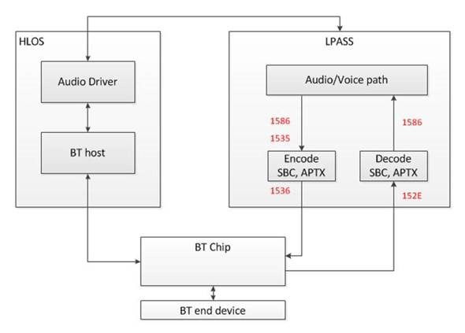
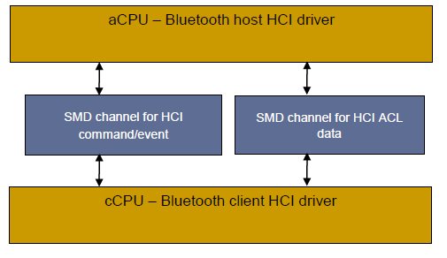

QC平台知识库 for BT codec issue for general issue Android N Android O
Table of Contents
1 Burn Image
1.1 Flash QRD
Steps:
adb root adb reboot-bootloader pushd \\network_path python fastboot_complete.py [Wait for fastboot build download finish] fastboot reboot
download QCN:
adb shell setprop persist.radio.multisim.config ssss
down完QCN以后，然后手机会reboot， 如果没识别的话，你就发这个命令下去 再reboot一下.
1.2 Update an Image part
command format: fastboot.exe flash bluetooth_a abl.elf
| part name(Android P) | file name |
|---|---|
| abl_a | abl.elf |
| bluetooth_a | BTFW.bin |
| boot_a | boot.img |
| cmnlib64_a | cmnlib64.mbn |
| cmnlib_a | cmnlib.mbn |
| devcfg_a | devcfg.mbn |
| dsp_a | dspso.bin |
| hyp_a | hyp.mbn |
| keymaster_a | km4.mbn |
| logfs | logfs_ufs_8mb.bin |
| logfs | logfs_ufs_8mb.bin |
| mdtp_a | mdtp.img |
| modem_a | NON-HLOS.bin |
| pmic_a | pmic.elf |
| rpm_a | rpm.mbn |
| system_a | system.img |
| persist | persist.img |
| userdata | userdata.img |
| storsec | storsec.mbn |
| mdtpsecapp | mdtpsecapp.mbn |
| tz_a | tz_a.mbn |
| vendor_a | vendor.img |
| xbl_a | xbl.elf |
2 Factory Test
2.1 BT Config
For Android O, 先在UI上把BT关掉然后执行
wdsdaemon -su
然后是btconfig。
adb root adb shell setprop qcom.bluetooth.soc pronto adb shell setprop ro.qualcomm.bt.hci_transport smd wdsdaemon -su (no need for Pronto)
open another cmd window
btconfig /dev/smd3 rawcmd 0x03 0x0003 (HCI Reset) btconfig /dev/smd3 rawcmd 0x06 0x03 （Enter Test Mode进入测试模式） btconfig /dev/smd3 rawcmd 0x03 0x05 0x02 0x00 0x02 （Auto Accept All Connections自动连接） btconfig /dev/smd3 rawcmd 0x03 0x1A 0x03 （Page Inquiry Scans按页扫描） btconfig /dev/smd3 rawcmd 0x03 0x20 0x00 （Disable Authentication取消认证） btconfig /dev/smd3 rawcmd 0x03 0x22 0x00 （Disable Encryption取消加密）
2.2 工程模式下写入和读取BD ADDR
#Write BD ADDRR btconfig /dev/smd3 rawcmd 0x3f 000b 0x01 0x02 0x06 0x00 0x55 0x77 0x77 0x88 0x00 SOC is WCN Done intiailizing fd = /dev/smd3 RAW HCI command: ogf 0x3f ocf 0xb Params: 0x1 0x2 0x6 0x0 0x55 0x77 0x77 0x88 0x0 SEND -> dump : 0b fc 09 01 02 06 00 55 77 77 88 00 Other event received, Breaking RECV <- dump : ff 0a 0b 01 02 06 00 55 77 77 88 00 #Read BD ADDDR btconfig /dev/smd3 rawcmd 0x04 0x0009 SOC is WCN Done intiailizing fd = /dev/smd3 RAW HCI command: ogf 0x4 ocf 0x9 Params: SEND -> dump : 09 10 00 Other event received, Breaking RECV <- dump : 0e 0a 01 09 10 00 00 55 77 77 88 00
4 Slimbus
4.1 Architecture

4.2 Turn on logs
adb root adb wait-for-device remount adb shell echo -n "file btfm_slim_codec.c +pf" ">" /sys/kernel/debug/dynamic_debug/control adb shell echo -n "file btfm_slim.c +pf" ">" /sys/kernel/debug/dynamic_debug/control adb shell echo -n "file btfm_slim_wcn3990.c +pf" ">" /sys/kernel/debug/dynamic_debug/control #Important Logs for SCO issue. 071376 07-06 20:51:13.035 D/btfm_slim_dai_hw_params( 0): dai->name = btfm_bt_sco_a2dp_slim_rx DAI-ID 2 rate 16000 num_ch 1 071401 07-06 20:51:13.043 I/btfm_slim_enable_ch( 0): slim_connect_sink(port: 16, ch: 157) 071567 07-06 20:51:13.102 D/btfm_slim_dai_prepare( 0): dai->name: btfm_bt_sco_slim_tx, dai->id: 1, dai->rate: 16000 071587 07-06 20:51:13.106 I/btfm_slim_chrk_enable_port( 0): programming SCO Tx with reg_val 3 to reg 0x50 071593 07-06 20:51:13.107 I/btfm_slim_enable_ch( 0): slim_connect_src(port: 0, ch: 161)
adb shell echo -n "file bluetooth-power.c +p" ">" /sys/kernel/debug/dynamic_debug/control adb shell echo -n "file msm_serial_hs.c +p" ">" /sys/kernel/debug/dynamic_debug/control adb shell echo -n "file slim-msm-ctrl.c +p" ">" /sys/kernel/debug/dynamic_debug/control adb shell echo -n "file slim-msm-ngd.c +p" ">" /sys/kernel/debug/dynamic_debug/control adb shell echo -n "file slim-msm.c +p" ">" /sys/kernel/debug/dynamic_debug/control adb shell echo -n "file btfm_slim_codec.c +pf" ">" /sys/kernel/debug/dynamic_debug/control adb shell echo -n "file btfm_slim.c +pf" ">" /sys/kernel/debug/dynamic_debug/control adb shell echo -n "file btfm_slim_wcn3990.c +pf" ">" /sys/kernel/debug/dynamic_debug/control adb shell echo -n "file q6adm.c +p" ">" /sys/kernel/debug/dynamic_debug/control adb shell echo -n "file q6afe.c +p" ">" /sys/kernel/debug/dynamic_debug/control adb shell echo -n "file q6asm.c +p" ">" /sys/kernel/debug/dynamic_debug/control adb shell echo -n "file q6voice.c +p" ">" /sys/kernel/debug/dynamic_debug/control adb shell echo -n "file soc-dapm.c +p" ">" /sys/kernel/debug/dynamic_debug/control adb shell echo -n "file msm-pcm-voip-v2.c +p" ">" /sys/kernel/debug/dynamic_debug/control adb shell echo -n "file msm-pcm-routing-v2.c +p" ">" /sys/kernel/debug/dynamic_debug/control adb shell echo -n "file msm-pcm-voice-v2.c +p" ">" /sys/kernel/debug/dynamic_debug/control adb shell echo -n "file msm-pcm-q6-v2.c +p" ">" /sys/kernel/debug/dynamic_debug/control adb shell echo -n "file msm-dai-q6-v2.c +p" ">" /sys/kernel/debug/dynamic_debug/control adb shell echo -n "file msmcobalt.c +p" ">" /sys/kernel/debug/dynamic_debug/control adb shell echo -n "file voice_svc.c +p" ">" /sys/kernel/debug/dynamic_debug/control
5 Uart ipc logs
<for SDM845 UART IPC> > cat /d/ipc_logging/898000.qcom,qup_uart_misc/log_cont >> /sdcard/uart_misc.ipc & > cat /d/ipc_logging/898000.qcom,qup_uart_pwr/log_cont >> /sdcard/uart_pwr.ipc & > cat /d/ipc_logging/898000.qcom,qup_uart_tx/log_cont >> /sdcard/uart_tx.ipc & > cat /d/ipc_logging/898000.qcom,qup_uart_rx/log_cont >> /sdcard/uart_rx.ipc &
一般客户在sdm845上都是用898000这个uart连接BT， 所以上面路径就可以.
6 BT
6.1 Split A2DP Common feature Turn On/Off
- Set “AUDIO_FEATURE_ENABLED_SPLIT_A2DP := false” in “hardware/qcom/audio/configs/sdmxxx/sdmxxx.mk” then build software.
- File case to Audio team to get the corresponding non-split A2DP <audio_policy_configuration.xml> file for your platform
Run the following commands.
adb push audio_policy_configuration.xml /system/etc/audio_policy_configuration.xml adb shell setprop persist.bt.enable.splita2dp false adb shell setprop persist.vendor.bt.enable.splita2dp false #new add. adb shell setprop persist.bt.a2dp_offload_cap false adb shell setprop persist.vendor.bt.a2dp_offload_cap false adb shell sync adb reboot
6.2 Disable BT Soc Logging
To disable SoC logging please make the below change @ vendor/qcom/proprietary/bluetooth/hidl_transport/bt/1.0/default/patch_dl_manager.cpp?
void PatchDLManager::EnableControllerLog() { #ifdef USER_DEBUG // value at cmd[5]: 1 - to enable, 0 - to disable cmd[5] = 0x00; // please change it to 0 #else ...... }
6.3 QDID Listings
Stack and Profile
MSM™ chipset
https://www.bluetooth.org/tpg/QLI_viewQDL.cfm?qid=20783
(for WCN3620) https://www.bluetooth.org/tpg/QLI_viewQDL.cfm?qid=21332
(for WCN3660, WCN3680) https://www.bluetooth.org/tpg/QLI_viewQDL.cfm?qid=18867
- QCA chipset
6.4 APQ8909
Bluetooth/FM HCI-SMD Interface

- Between cCPU and aCPU
- Two SMD channels are used for Bluetooth HCI commands and events, HCI ACL data transfers
- One SMD channel for FM control commands and events
- One SMD channel for the WCN-SS debug logging shared by WLAN, Bluetooth, and FM
6.5 Enable/disable Bluetooth
one way to enable/disable BT with adb shell. It is just same as operation from GUI. Details is as follows:
adb shell service call service: No code specified for call Usage: service [-h|-?] service list service check SERVICE service call SERVICE CODE [i32 N | i64 N | f N | d N | s16 STR ] ... Options: i32: Write the 32-bit integer N into the send parcel. i64: Write the 64-bit integer N into the send parcel. f: Write the 32-bit single-precision number N into the send parcel. d: Write the 64-bit double-precision number N into the send parcel. s16: Write the UTF-16 string STR into the send parcel.
The CODE means sequence number of function in the AIDL file:
frameworks/base/core/java/android/bluetooth/IBluetoothManager.aidl
interface IBluetoothManager { IBluetooth registerAdapter(in IBluetoothManagerCallback callback); void unregisterAdapter(in IBluetoothManagerCallback callback); void registerStateChangeCallback(in IBluetoothStateChangeCallback callback); void unregisterStateChangeCallback(in IBluetoothStateChangeCallback callback); boolean isEnabled(); boolean enable(String packageName); boolean enableNoAutoConnect(String packageName); boolean disable(String packageName, boolean persist); int getState(); IBluetoothGatt getBluetoothGatt(); boolean bindBluetoothProfileService(int profile, IBluetoothProfileServiceConnection proxy); void unbindBluetoothProfileService(int profile, IBluetoothProfileServiceConnection proxy); String getAddress(); String getName(); boolean factoryReset(); boolean isBleScanAlwaysAvailable(); int updateBleAppCount(IBinder b, boolean enable, String packageName); boolean isBleAppPresent(); }
Since Android N and Android O has different interface, there are difference command.
adb shell service call bluetooth_manager 8 adb shell service call bluetooth_manager 10
adb shell service call bluetooth_manager 6 s16 "com.android.bluetooth" #Enable adb shell service call bluetooth_manager 8 s16 "com.android.bluetooth" #Disablle